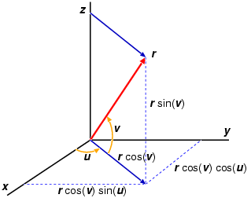
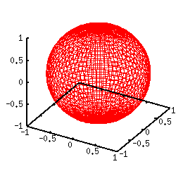

- not so Frequently Asked Questions -
update 2004/11/16
|
|
- not so Frequently Asked Questions - update 2004/11/16
|
Parametric ExpressionThere are two ways to display a 3-dimensional function. The first one is to use variables x,y , and define z values as z=f(x,y). The other method is to define a 3-D function by two parameters u,v as : x = f(u,v) y = g(u,v) z = h(u,v) When your function f(x,y) is not so complicated, the former method is easier. gnuplot> f(x,y)=sin(x)*cos(y) gnuplot> splot f(x,y) However a function defined in the polar coordinate is hard to express in a form "z=", so that we need to use a parametric representation. For example, a sphere of unit radius is expressed as x^2+y^2+z^2=1, then one has to define two functions (z > 0 and z < 0), namely z=sqrt(1-x*x-y*y) and z = -sqrt(1-x*x-y*y). The sphere can be expressed with two parameters u and v those define the condition that the radius is constant. Suppose u and v are the angles as follows, and alter those values from zero to 360 under the condition that the radius r does not change. With the angles u,v and radius r, an arbitrary coordinate x,y,z can be expressed as follows: x = r*cos(u)*cos(v) y = r*sin(u)*cos(v) z = r*sin(v) The sphere can be defined in the polar coordinate so as that the radius r=a=constant, then one can get the sphere when the parameter r is replaced by a constant value. When a=1, the functions above represent the sphere of unit radius. x = cos(u)*cos(v) y = sin(u)*cos(v) z = sin(v) Therefore to draw a 3-D sphere with gnuplot:
gnuplot> set parametric
dummy variable is t for curves, u/v for surfaces
gnuplot> set angle degree
gnuplot> set urange [0:360]
gnuplot> set vrange [-90:90]
gnuplot> set isosample 72,36
gnuplot> set ticslevel 0
gnuplot> set size 0.7,1.0
gnuplot> a=1
gnuplot> splot a*cos(u)*cos(v),a*sin(u)*cos(v),a*sin(v)

The default angle unit is radian. The second line set angle degree changes the angle unit into degree. The third and fourth lines tell gnuplot to change the parameters u,v from zero to 360 deg. We changed the aspect ratio by the set size command in order to make the sphere be spherical on your screen (otherwise the drawing becomes like a pancake). The roughness of wire-frame can be controlled by set isosample m,n . The larger the number is, the finer the mesh becomes. The number m is for the parameter u, while n is for v. The functions used above can be more in a convenient form when one defines functions: gnuplot> fx(u,v)=cos(u)*cos(v) gnuplot> fy(u,v)=sin(u)*cos(v) gnuplot> fz(v)=sin(v) gnuplot> splot a*fx(u,v),a*fy(u,v),a*fz(v)  |